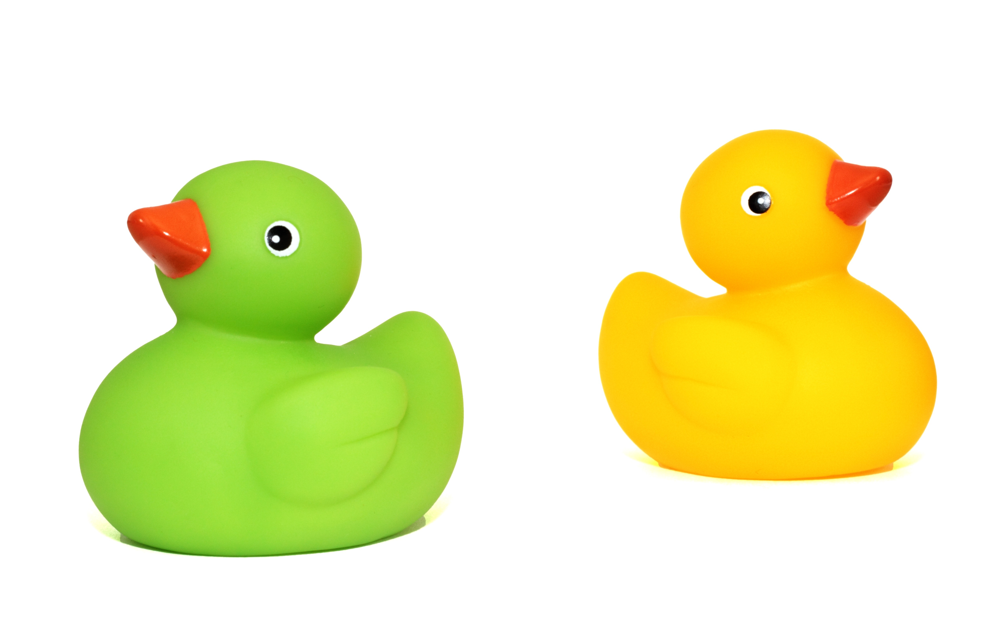

The duck song
a duck walked up to a lemonade stand and said to the man running the stand "hey got and juice"
Quack Quackposted on july 9, 2023
product 1
Rubber ducks are more than just bath toys; they are iconic symbols of nostalgia and whimsy that have captured the hearts of both children and adults for generations. These cheerful, yellow companions have a fascinating history and have found their way into various aspects of popular culture.
The rubber duck made its debut in the late 19th century when rubber manufacturing was in its infancy. Initially, they weren't the bright yellow we associate with today. Instead, they were made of hard rubber and didn't quite resemble the adorable, floating ducks we know now. Early versions were intended as chew toys for babies and were not necessarily meant for the bathtub.
posted on july 9, 2023
product 2
Rubber ducks have made numerous appearances in movies, TV shows, and literature. Perhaps one of the most famous instances is in Jim Henson's "Sesame Street," where Ernie often sang "Rubber Duckie," celebrating his beloved bathtub companion. They've also appeared in various children's books, cementing their status as a beloved children's toy.
In the 1940s, the rubber duck underwent a transformation. A man named Peter Ganine patented a design that resembled the classic yellow rubber duck we know today. This design revolutionized the toy, making it buoyant and perfect for floating in the bathtub. The yellow color and friendly appearance contributed to its widespread popularity.
a duck walked up to a lemonade stand and said to the man running the stand "hey got and juice"
Quack Quack